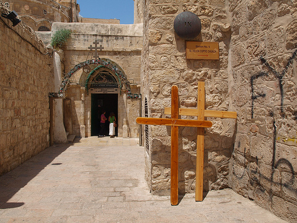
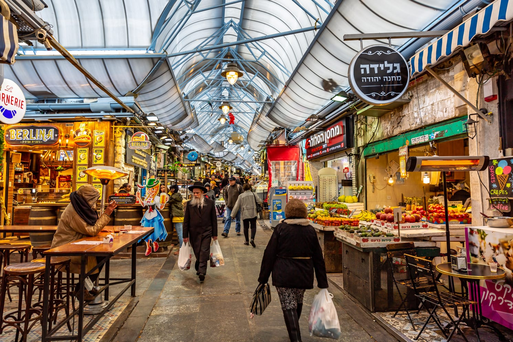

-
Muro de los lamentos:
El Muro de los Lamentos, en Jerusalén, es un sitio sagrado del
judaísmo. También conocido como el Kotel, es el único vestigio visible del Segundo Templo judío, destruido
en el año 70 d.C. Durante siglos, ha sido un lugar de oración y reflexión para los judíos de todo el mundo.
Los fieles acuden para rezar, escribir peticiones en papel y colocarlos entre las grietas del muro como un
acto de devoción y conexión espiritual con Dios.

Conocé mas sobre el lugar en:

-
Torre de David:
La Torre de David, ubicada en Jerusalén, es una imponente fortaleza histórica que ha sido testigo de los
acontecimientos cruciales de la ciudad a lo largo de los siglos. Originalmente construida como una
fortificación en la antigüedad, ha sido reconstruida y modificada por varias civilizaciones. Hoy en día,
alberga un museo que narra la fascinante historia de Jerusalén, desde la antigüedad hasta la actualidad,
ofreciendo una perspectiva única de esta ciudad sagrada.

Conocé mas sobre el lugar en:
-
Monte de los olivos:
El Monte de los Olivos, ubicado al este de la Ciudad Vieja de Jerusalén, es una prominente elevación con
significado religioso para judíos, cristianos y musulmanes. Ofrece una vista panorámica impresionante de la
ciudad antigua y alrededores. Este monte alberga importantes lugares sagrados, como la Capilla de la
Ascensión, el Jardín de Getsemaní y el Cementerio Judío más antiguo del mundo, otorgándole una profunda
importancia espiritual y cultural en la historia de Jerusalén.

Conocé mas sobre el lugar en:
-
Mezquita dorada:
La Mezquita Dorada, también conocida como el Domo de la Roca, es un magnífico edificio islámico situado en
el Monte del Templo en Jerusalén. Su cúpula dorada resplandece en el horizonte de la ciudad y es un símbolo
icónico de Jerusalén. Considerada sagrada por musulmanes, judíos y cristianos, esta estructura histórica
alberga la Piedra Fundacional, un lugar de gran importancia religiosa y cultural para diversas tradiciones.

Conocé mas sobre el lugar en:
-
Catedral de San Jacobo:
Esta iglesia ortodoxa del barrio armenio es una joya arquitectónica, con una fachada distintiva y elaborada.
En su interior, los visitantes pueden admirar hermosos frescos, iconos y reliquias sagradas. La catedral es
un lugar de importancia espiritual para la comunidad armenia y también atrae a turistas interesados en la
historia y la cultura de esta milenaria civilización cristiana.

Conocé mas sobre el lugar en:
-
Vía dolorosa:
La Vía Dolorosa en Jerusalén es una calle histórica que conmemora el camino que Jesucristo recorrió llevando
la cruz hacia su crucifixión en el Gólgota. Marcada por 14 estaciones que representan eventos significativos
de ese recorrido, es un importante sitio de peregrinación para los cristianos. Los fieles caminan por esta
vía, reflexionando sobre la pasión y el sufrimiento de Jesús durante la Semana Santa y otros momentos
devocionales.

Conocé mas sobre el lugar en:
-
Santo sepulcro:
El Santo Sepulcro de Jerusalén es uno de los sitios cristianos más sagrados del mundo. Este complejo
histórico alberga la tumba de Jesucristo, donde según la tradición fue crucificado, sepultado y resucitado.
Es un lugar de peregrinación y devoción para millones de cristianos de todas las denominaciones, que visitan
para orar, reflexionar y venerar el lugar donde se cree que tuvieron lugar los eventos centrales de la fe
cristiana.

Conocé mas sobre el lugar en:
🛍️Compras:
-
Shuk Mahane Yehuda:
Este vibrante mercado es un centro bullicioso de actividad donde los lugareños y los visitantes pueden
explorar una amplia variedad de productos frescos, especias, pan recién horneado, dulces tradicionales y una
diversidad de productos locales. Además de ser un lugar para hacer compras, el Shuk Mahane Yehuda también
ofrece una experiencia culinaria única con sus numerosos restaurantes y puestos de comida callejera.

Conocé mas sobre el lugar en:
-
Mercado de Damasco:
El Mercado de Damasco, situado en la Ciudad Vieja de Jerusalén, es un laberinto de callejones llenos de vida
y color. Aquí, los comerciantes ofrecen una amplia variedad de productos, desde especias y dulces hasta
artesanías y recuerdos. Los estrechos pasajes están impregnados de aromas tentadores y el bullicio de la
actividad comercial, creando una experiencia cautivadora para los visitantes.

Conocé mas sobre el lugar en:
-
Mamilla Mall:
Ubicado cerca de la Ciudad Vieja, este centro comercial al aire libre ofrece una experiencia de compras de
lujo con una variedad de tiendas de moda, restaurantes y cafés. Además de las compras, los visitantes pueden
disfrutar de la arquitectura moderna y las vistas panorámicas de la Ciudad Vieja desde este animado destino
comercial.

Conocé mas sobre el lugar en:
 Agencia Turismo IStravel - Jerusalem
Agencia Turismo IStravel - Jerusalem